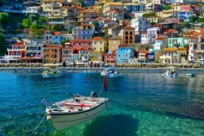

-
Aktualne warunki podróży do Grecji
- • Podróżowanie do Grecji jest możliwe bez okazywania certyfikatów szczepień i wykonywania testów na covid-19.
Powrót do Polski
- • Od 28.03.2022 został zniesiony obowiązek odbycia kwarantanny po przekroczeniu polskiej granicy.
- • Warunki te mogą ulec zmianie. Przed podróżą sprawdź aktualne przepisy rządowe na stronie www.gov.pl
Grecja na wakacje
Przejrzysta woda, czyste, piaszczyste plaże, piękne widoki na bielone budynki i nutka historii - Grecja zdecydowanie jest doskonałym miejscem na relaksujące wakacje! Co jednak wybrać: część kontynentalną, a może jedną z wysp greckich - Kretę, Santorini, Zakynthos lub Rodos?
Zobacz oferty
- lato 2023
- Last Minute
- All Inclusive

Korfu
Powietrze: 16 °C
Temperatura wody: 20°C
Cena od: 493 zł
Zakynthos
Powietrze: Moderate
Temperatura wody: 16 °C
Cena od: 357 zł
Kreta
Powietrze: 20 °C
Temperatura wody: 17°C
Cena od:465 zł
Rodos
Powietrze: 20 °C
Temperatura wody: 17°C
Cena od: 277 zł